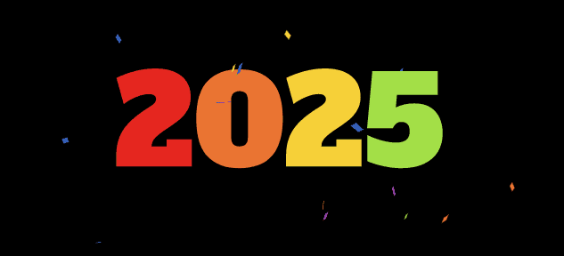
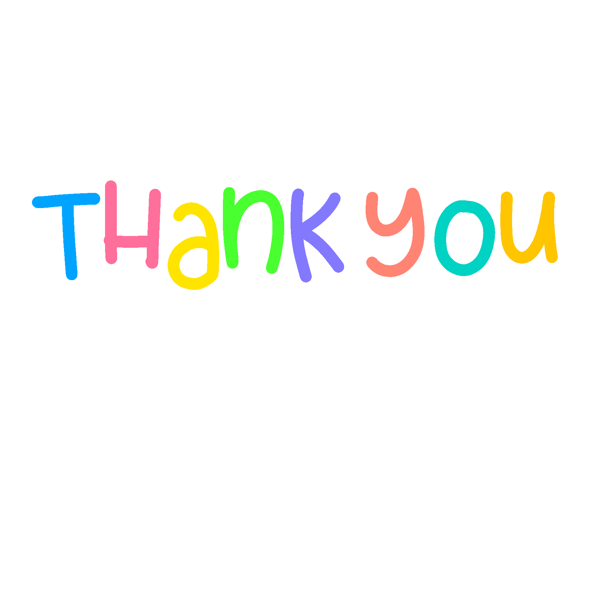

Blogs
Jan-12-2025
With the new year comes more progress, projects and challenges to overcome! I have been continuing my classes and learning so much since my last update. Today I added a macro mouse recorder to the projects list. I enjoy learning about and playing with new libraries inside of python, but I have to admit I want to learn more JavaScript for online applications. Instead of abandoning my current classes and jumping right in, ill just stay focused and finished what I started for now. So much to learn out there and I understand that I fall into rabbit holes of development in different languages or software, even cyber security subjects. Nevertheless ill choose a stable path to success. Next courses are heavily leaning towards JavaScript that being said. Hope Everyone had a great holiday season, now lets get back to work!

Oct-20-2024
A quick update, still doing my classes not as much as I would like but managing to stay consistent in my progress. I've been working a lot at my day job and finding some time here and there to work on the website. The docs on my programs not so much, although I did create a program called Recordings Helper. I would say at this point the docs are lacking. That being said I do plan to finish them all completely.
Oct-01-2024
Well I've had my fun with the projects and website. Its time to get back learning more lessons from boot. For now not gonna be posting too much on youtube, although I'm going to be working more on the docs for projects.
Feel free to reach out and contact me.
Sep-29-2024
I have been working on the ball simulator, and am actually having a blast! I'm learning so much while finding and solving these problems.
People on youtube seem to like the shorts I make demonstrating the different effects I create. I'm pretty satisfied with the response. Thank you everyone for the likes and subs!

Sep-26-2024
Today I decided to create a simulation in pygame called Bouncing Balls.
I posted a video on youtube that seems to be liked by many! Perhaps ill make more of these simulations.
Sep,25,2024
Added a resource section in blogs, aslo learning alot of css and configuring the website. Hope it looks good! I have to admit I got kind of hung up in the web dev of this site, its actually pretty fun! The generation of this site is still from my static site generator, I just personally edit the home and projects pages for css class use. Im implenting the class cases into my program to run completly from markdown. The nav buttons are already transfered over so thats how im automatically generating them on all the pages.
Sep,22,2024
Wow check out this amazing interviw with Brian Kernighan and Lex Fridman! What insights into the industry..
Really exited to start working on my new website! still trying to see what this css stuff is all about. My static site generator is up and working! (This site is made with python and markdown files..) Now I can create project docs and show my work!